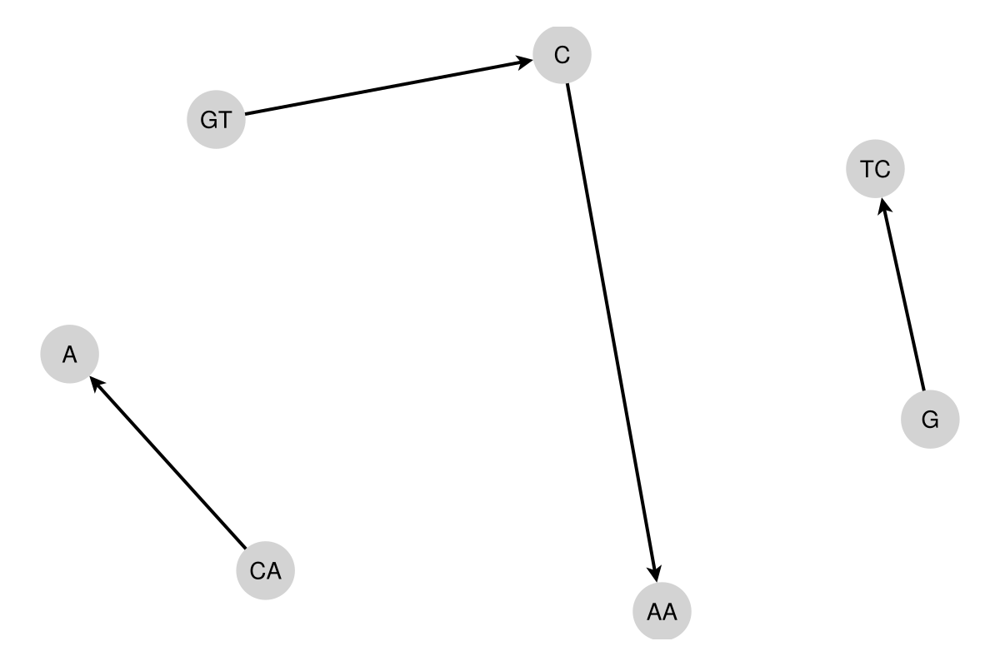
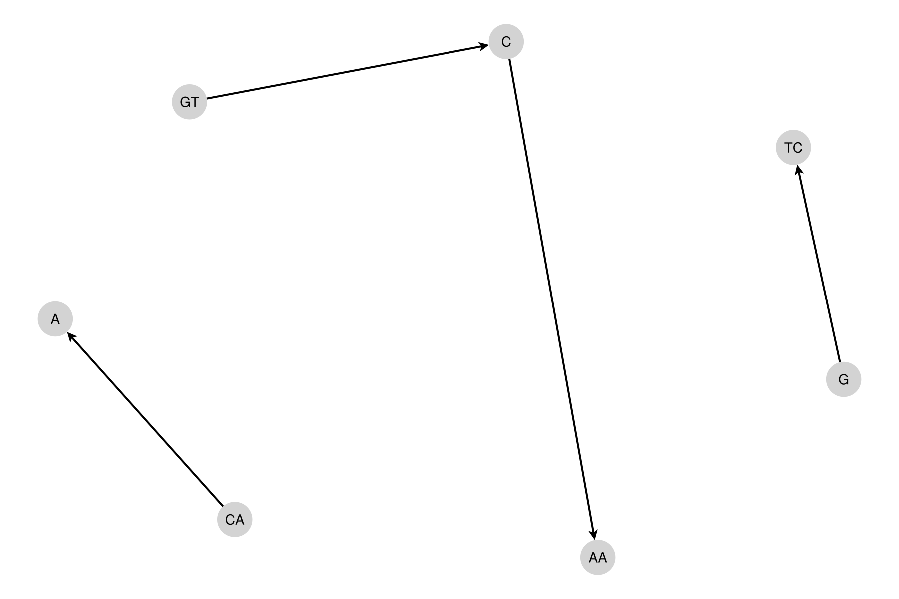
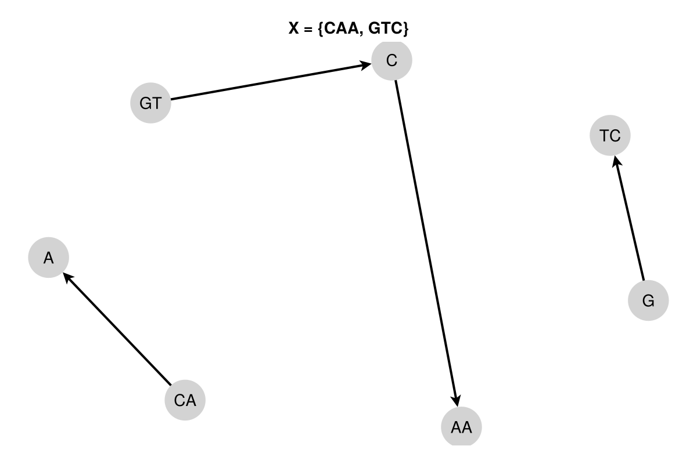
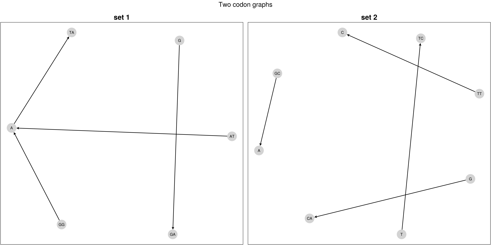

Documentation for BioBlockcodes.
Tutorial
First of all, load the required packages:
julia> using BioBlockcodes, BioSequencesBioSequences provides the dna"..." string macro that produces LongDNA{4} values which are required later.
Testing a codon set for circularity with is_circular
This tutorial walks you through is_circular(codons::Vector{LongDNA{4}}), the convenience method that answers a single question: do the given codons form a circular code?
Background
A set of codons (words of length 3 over the DNA alphabet) is a circular code if every sequence written on a circle can be decoded into codons in only one way, regardless of where you start reading. Circular codes are of interest in theoretical biology because they allow the reading frame to be retrieved locally, without a start signal.
BioBlockcodes decides circularity with a graph criterion: it builds the codon graph of the set (vertices are the mononucleotides and dinucleotides occurring in the codons, and each codon N1N2N3 contributes the edges N1 -> N2N3 and N1N2 -> N3) and checks that this directed graph contains no cycle. A codon set is circular if and only if its codon graph is acyclic.
The two methods of is_circular
is_circular is defined for two argument types:
is_circular(cgd::CodonGraphData)works on a codon graph you have already constructed.is_circular(codons::Vector{LongDNA{4}})takes the raw codon set, builds theCodonGraphDatafor you, and forwards to the method above.
Use the vector method when you just want a yes/no answer and do not need the graph object for anything else.
Build a codon set
A codon set is simply a Vector{LongDNA{4}} in which every entry has length 3:
julia> codon_set = [dna"AAC", dna"GTT"]
2-element Vector{LongSequence{DNAAlphabet{4}}}:
AAC
GTTYou can also build the vector from strings, which is handy for longer sets:
julia> LongDNA{4}.(["AAC", "GTT"])
2-element Vector{LongSequence{DNAAlphabet{4}}}:
AAC
GTTCall is_circular
julia> is_circular(codon_set)
trueThe codon graph of {AAC, GTT} has no directed cycle, so the set is a circular code.
A non-circular example
The set {AGA, AAG, GAA} consists of the three cyclic permutations of the same pattern. Its codon graph contains a cycle, so it is not a circular code:
julia> is_circular([dna"AGA", dna"AAG", dna"GAA"])
falseRelationship to the CodonGraphData method
The following two calls are equivalent; the vector method just spares you the explicit construction step:
julia> is_circular([dna"AAC", dna"GTT"])
true
julia> cgd = CodonGraphData([dna"AAC", dna"GTT"]);
julia> is_circular(cgd)
trueReach for the CodonGraphData method when you also need to run other checks on the same set (for example is_c3, is_comma_free or is_self_complementary), so the graph is built only once.
Notes and errors
- Every codon in
codonsmust be a valid length-3 DNA sequence. An invalid codon set (wrong length, empty, duplicates, …) raises anArgumentErrorwhile theCodonGraphDatais being constructed. - The order of the codons in the vector does not affect the result.
is_circulartests circularity only. Stronger properties such as comma-freeness or the C3 property have their own predicates.
Testing a codon set for the C3 property with is_c3
This section covers is_c3(codons::Vector{LongDNA{4}}), which decides whether a codon set is a C3 code. The setup and codon-set construction from the is_circular section above carry over unchanged; only the property being tested is new.
Background
A codon set is C3 if the set itself and both of its reading-frame shifts are circular. The two frame shifts are obtained by rotating every codon N1N2N3 cyclically by one and by two positions; is_c3 builds the codon graph for each of the three sets and checks that none of them contains a cycle.
C3 sits strictly between the two other predicates in this tutorial: every C3 code is is_circular, and every is_strong_c3 code is C3, but neither implication reverses.
The two methods of is_c3
As with is_circular, the predicate is defined for both argument types:
is_c3(cgd::CodonGraphData)works on an existing codon graph.is_c3(codons::Vector{LongDNA{4}})builds theCodonGraphDatainternally and forwards to the method above. Note that the two frame-shifted sets get their own graphs regardless of which method you call.
Checking a codon set
julia> is_c3([dna"AAC", dna"ATG"])
true{AAC, ATG} is circular and stays circular under both frame shifts, so it is a C3 code.
Circular but not C3
Circularity of the set alone is not enough. {AAC, CCA} is circular, but one of its frame shifts is not, so it fails the C3 test:
julia> is_circular([dna"AAC", dna"CCA"])
true
julia> is_c3([dna"AAC", dna"CCA"])
falseRelationship to the CodonGraphData method
The two calls below are equivalent; pass a CodonGraphData when you want to run several checks on the same set without rebuilding its graph:
julia> is_c3([dna"AAC", dna"ATG"])
true
julia> cgd = CodonGraphData([dna"AAC", dna"ATG"]);
julia> is_c3(cgd)
trueNotes and errors
- An invalid codon set raises an
ArgumentErrorwhile theCodonGraphDatais being constructed, exactly as foris_circular. - The order of the codons does not affect the result.
- A
falseresult does not say which frame is to blame; callis_circularon the set to see whether circularity already fails or only one of the shifts does.
Testing a codon set for the strong C3 property with is_strong_c3
This section covers is_strong_c3(codons::Vector{LongDNA{4}}), which decides whether a codon set is a strong comma-free C3 code. The setup and codon-set construction from the is_circular section above carry over unchanged; only the property being tested is new.
Background
The relevant properties form a hierarchy, each one strictly stronger than the one before:
- circular – the codon graph is acyclic (see the previous section).
- C3 – the code and both of its frame shifts (obtained by cyclically shifting every codon one and two positions to the left) are circular. This is what
is_c3checks. - strong C3 – the code is C3 and its expanded codon graph contains no cycle longer than length 2. The expanded graph adds, for every codon
N1N2N3, the verticesN2andN3N1together with the two edgesN2 -> N3N1andN3N1 -> N2.
So is_strong_c3(codons) returns true only for sets that already pass is_circular and is_c3.
The two methods of is_strong_c3
Like is_circular, the predicate is defined for both argument types:
is_strong_c3(cgd::CodonGraphData)works on an existing codon graph.is_strong_c3(codons::Vector{LongDNA{4}})builds theCodonGraphDatainternally and forwards to the method above.
Checking a codon set
julia> is_strong_c3([dna"GGA", dna"TAA"])
trueThe set {GGA, TAA} is circular, stays circular under both frame shifts, and its expanded graph has only length-2 cycles, so it is strong C3.
C3 but not strong C3
Passing is_c3 is necessary but not sufficient. The set {AAC, ACC} is C3, yet its expanded graph contains a longer cycle, so it fails the strong C3 test:
julia> is_c3([dna"AAC", dna"ACC"])
true
julia> is_strong_c3([dna"AAC", dna"ACC"])
falseA codon set that fails outright
{AGA, AAG, CTG, TGA, TTC} is not even circular, so every stronger property fails as well:
julia> is_strong_c3([dna"AGA", dna"AAG", dna"CTG", dna"TGA", dna"TTC"])
falseRelationship to the CodonGraphData method
As with is_circular, the two calls below are equivalent; pass a CodonGraphData when you want to run several checks on the same set without rebuilding the graph each time:
julia> is_strong_c3([dna"GGA", dna"TAA"])
true
julia> cgd = CodonGraphData([dna"GGA", dna"TAA"]);
julia> is_strong_c3(cgd)
trueNotes and errors
- An invalid codon set raises an
ArgumentErrorwhile theCodonGraphDatais being constructed, exactly as foris_circular. - The order of the codons does not affect the result.
is_strong_c3returningfalsetells you the set is not strong C3, but not which weaker property it still satisfies; callis_c3oris_circularto locate the set in the hierarchy.
Plotting graphs
The codon graph behind every predicate in the previous sections can be drawn. The plotting functions live in the package extension BioBlockcodesGraphMakie, so they only become available once a Makie backend and GraphMakie have been loaded. Codon sets and CodonGraphData are built exactly as before.
Loading the extension
BioBlockcodesGraphMakie is a weak-dependency extension. Its trigger packages are CairoMakie, GraphMakie and NetworkLayout; loading them next to BioBlockcodes activates the extension automatically:
using BioBlockcodes, BioSequences
using CairoMakie, GraphMakieUntil the extension is active, plot_codon_graph is only an empty function stub and calling it throws a MethodError. Use CairoMakie for writing image files and, for example, GLMakie for an interactive window; the plotting code itself is backend-agnostic.
Plotting a single codon graph with plot_codon_graph
plot_codon_graph(cgd::CodonGraphData; fig_size = (600, 400), spring = 100) takes a CodonGraphData and returns a Makie.Figure with the directed codon graph laid out by a spring (force-directed) algorithm. Vertices are labelled with the mononucleotides and dinucleotides of the codon graph; edges carry arrow heads showing their direction.
codon_set = [dna"CAA", dna"GTC"]
cgd = CodonGraphData(codon_set)
fig = plot_codon_graph(cgd)
The function returns the figure rather than displaying it, so you decide what to do with it — save("codon_graph.png", fig) to write a file, display(fig) to show it, or embed it in a larger layout.
Adjusting size and layout
Two keyword arguments control the output:
fig_size::Tuple{Int, Int}– width and height of the figure in pixels.spring::Real– theCparameter of the spring layout. Larger values push the vertices further apart, which helps with dense graphs; smaller values make the drawing more compact.
plot_codon_graph(cgd; fig_size = (900, 600), spring = 200)
Because the layout is force-directed and seeded randomly, successive calls can produce slightly different arrangements of the same graph.
Adding a title
plot_codon_graph uses the graph_title field of the CodonGraphData as the axis title. Set it when constructing the graph:
cgd_titled = CodonGraphData([dna"CAA", dna"GTC"]; graph_title = "X = {CAA, GTC}")
plot_codon_graph(cgd_titled)
Plotting several graphs side by side
plot_multiple_codon_graphs(cgd_list::Vector{CodonGraphData}; fig_title = nothing, fig_size = (1800, 900)) arranges a list of codon graphs in a grid (the number of columns is chosen from the number of graphs) and returns one Figure. Pass fig_title for a caption above the whole grid:
cgd_list = [
CodonGraphData([dna"ATA", dna"GGA"]; graph_title = "set 1"),
CodonGraphData([dna"TTC", dna"GCA"]; graph_title = "set 2"),
]
plot_multiple_codon_graphs(cgd_list; fig_title = "Two codon graphs")
Notes
- Both functions take
CodonGraphData, not a raw codon vector; build the graph first withCodonGraphData. - An invalid
CodonGraphData, an emptycgd_list, or invalid entries in it raise anArgumentError. - The extension is optional:
BioBlockcodesitself has no dependency on Makie, so scripts that only test codon properties stay lightweight.
API
BioBlockcodes.CodonGraphDataBioBlockcodes.calc_strong_c3_comb_by_sizeBioBlockcodes.codon_set_to_strBioBlockcodes.get_codon_set_from_lineBioBlockcodes.get_comp_rev_codon_setBioBlockcodes.is_c3BioBlockcodes.is_c3BioBlockcodes.is_circularBioBlockcodes.is_circularBioBlockcodes.is_comma_freeBioBlockcodes.is_comma_freeBioBlockcodes.is_self_complementaryBioBlockcodes.is_strong_c3BioBlockcodes.is_strong_c3BioBlockcodes.left_shift_codonBioBlockcodes.left_shift_codon_set
BioBlockcodes.CodonGraphData — Method
CodonGraphData(codon_set::Vector{LongDNA{4}}; graph_title::String = "") -> CodonGraphDataConstructs a CodonGraphData instance from a codon set and builds the corresponding graph.
Arguments
codon_set::Vector{LongDNA{4}}: Input codons used to build the graph.
Keyword Arguments
graph_title::String="": Optional title for the graph.
Returns
CodonGraphData: Fully initialized structure with vertices, edges, and labels.
Throws
ArgumentError: Ifcodon_setis invalid or graph construction fails.
Examples
julia> using BioBlockcodes, BioSequences
julia> codon_set = [dna"CCA", dna"GAT"];
julia> cgd = CodonGraphData(codon_set);
julia> cgd isa CodonGraphData
trueBioBlockcodes.calc_strong_c3_comb_by_size — Method
calc_strong_c3_comb_by_size(comb_size::Int, ckp_path::AbstractString, prev_res_path::AbstractString, res_path::AbstractString, stop_flag::Base.Threads.Atomic{Bool}; worker_count::Int=1) -> BoolComputes strong-C3 combinations of a given size with checkpoint and resume logic.
Arguments
comb_size::Int: Size of combinations to compute (1 to 20).ckp_path::AbstractString: Path to the checkpoint file.prev_res_path::AbstractString: Path to the result file of the previous combination size.res_path::AbstractString: Path to the output file for current results.stop_flag::Base.Threads.Atomic{Bool}: Atomic stop flag for graceful interruption.
Keyword Arguments
worker_count::Int=nthreads(): Number of parallel workers for processing.
Returns
Bool:trueif processing ends regularly or is completed cleanly.
Throws
ArgumentError: If inputs, checkpoint contents, or file states are invalid.
Examples
BioBlockcodes.codon_set_to_str — Method
codon_set_to_str(codon_set::Vector{LongDNA{4}}) -> StringFormats a codon set as a quoted, comma-separated string.
Arguments
codon_set::Vector{LongDNA{4}}: Codon set to format.
Returns
String: Formatted representation, e.g."ATG", "TGA".
Throws
ArgumentError: Ifcodon_setis invalid.
Examples
julia> using BioBlockcodes, BioSequences
julia> codon_set = [dna"ATG", dna"TGA"];
julia> codon_set_to_str(codon_set) == "\"ATG\", \"TGA\""
trueBioBlockcodes.get_codon_set_from_line — Method
get_codon_set_from_line(line::AbstractString) -> Vector{LongDNA{4}}Parses one line in the format COD1|COD2|...,idx1|idx2|... into a codon set.
Arguments
line::AbstractString: Input line with codons and corresponding indices.
Returns
Vector{LongDNA{4}}: Parsed and validated codon set.
Throws
ArgumentError: If the format, indices, or codons are invalid.
Examples
julia> using BioBlockcodes, BioSequences
julia> line = "AAC|AAG,1|2";
julia> get_codon_set_from_line(line)
2-element Vector{LongSequence{DNAAlphabet{4}}}:
AAC
AAGBioBlockcodes.get_comp_rev_codon_set — Method
get_comp_rev_codon_set(codon_set::Vector{LongDNA{4}}) -> Vector{LongDNA{4}}Builds the complemented and reversed codon for each codon in the set.
Arguments
codon_set::Vector{LongDNA{4}}: Input codon set.
Returns
Vector{LongDNA{4}}: Complemented-and-reversed codon set in the same order.
Throws
ArgumentError: Ifcodon_setis invalid.
Examples
julia> using BioBlockcodes, BioSequences
julia> codon_set = [dna"ATG", dna"TGA", dna"TCA"];
julia> get_comp_rev_codon_set(codon_set)
3-element Vector{LongSequence{DNAAlphabet{4}}}:
CAT
TCA
TGABioBlockcodes.is_c3 — Method
is_c3(cgd::CodonGraphData) -> Bool
Checks whether a codon graph satisfies the C3 property.
Arguments
cgd::CodonGraphData: Codon graph data object that contains the graph.
Returns
Bool:trueifcgdis C3, otherwisefalse.
Throws
ArgumentError: Ifcgdis invalid.
Examples
julia> using BioBlockcodes, BioSequences
julia> codon_set = [dna"ATG", dna"TGA"];
julia> cgd = CodonGraphData(codon_set);
julia> is_c3(cgd)
falseBioBlockcodes.is_c3 — Method
is_c3(
codons::Vector{BioSequences.LongSequence{BioSequences.DNAAlphabet{4}}}
) -> Bool
Checks whether the set of codons as specified in codons satisfies the C3 property.
Examples
julia> using BioBlockcodes, BioSequences
julia> codon_set = [dna"ATG", dna"TGA"];
julia> is_c3(codon_set)
falseBioBlockcodes.is_circular — Method
is_circular(cgd::CodonGraphData) -> Bool
Checks whether a codon graph is acyclic aka. contains no cycles.
Arguments
cgd::CodonGraphData: Codon graph data object that contains the graph.
Returns
Bool:trueif no cycles are present, otherwisefalse.
Throws
ArgumentError: Ifcgdis invalid.
Examples
julia> using BioBlockcodes, BioSequences
julia> codon_set = [dna"AAC", dna"GTT"];
julia> cgd = CodonGraphData(codon_set);
julia> is_circular(cgd)
trueBioBlockcodes.is_circular — Method
is_circular(
codons::Vector{BioSequences.LongSequence{BioSequences.DNAAlphabet{4}}}
) -> Bool
Checks whether the set of codons as specified in codons defines a circular code.
Examples
julia> using BioBlockcodes, BioSequences
julia> codon_set = [dna"AAC", dna"GTT"];
julia> is_circular(codon_set)
trueBioBlockcodes.is_comma_free — Method
is_comma_free(cgd::CodonGraphData) -> Bool
Checks whether a codon graph is comma-free.
Arguments
cgd::CodonGraphData: Codon graph data object to check.
Returns
Bool:trueifcgdis comma-free, otherwisefalse.
Throws
ArgumentError: Ifcgdis invalid.
Examples
julia> using BioBlockcodes, BioSequences
julia> codon_set = [dna"CGA", dna"TAC"];
julia> cgd = CodonGraphData(codon_set);
julia> is_comma_free(cgd)
trueBioBlockcodes.is_comma_free — Method
is_comma_free(
codons::Vector{BioSequences.LongSequence{BioSequences.DNAAlphabet{4}}}
) -> Bool
Checks whether the set of codons as specified in codons defines a comma-free code.
Examples
julia> using BioBlockcodes, BioSequences
julia> codon_set = [dna"AAC", dna"GTT"];
julia> is_comma_free(codon_set)
trueBioBlockcodes.is_self_complementary — Method
is_self_complementary(cgd::CodonGraphData) -> Bool
Checks whether a codon graph is invariant under complement and reversal.
Arguments
cgd::CodonGraphData: Codon graph data object to check.
Returns
Bool:trueif the graph is self-complementary, otherwisefalse.
Throws
ArgumentError: Ifcgdis invalid.
Examples
julia> using BioBlockcodes, BioSequences
julia> codon_set = [dna"AGC", dna"CTG", dna"TGT", dna"ATC"];
julia> cgd = CodonGraphData(codon_set);
julia> is_self_complementary(cgd)
falseBioBlockcodes.is_strong_c3 — Method
is_strong_c3(cgd::CodonGraphData) -> Bool
Checks whether a codon graph is strong C3.
Arguments
cgd::CodonGraphData: Codon graph data object to check.
Returns
Bool:trueifcgdis strong C3, otherwisefalse.
Throws
ArgumentError: Ifcgdis invalid.
Examples
julia> using BioBlockcodes, BioSequences
julia> codon_set = [dna"GGA", dna"TAA"];
julia> cgd = CodonGraphData(codon_set);
julia> is_strong_c3(cgd)
trueBioBlockcodes.is_strong_c3 — Method
is_strong_c3(
codons::Vector{BioSequences.LongSequence{BioSequences.DNAAlphabet{4}}}
) -> Bool
Checks whether the set of codons as specified in codons defines a is strong C3 code.
Examples
julia> using BioBlockcodes, BioSequences
julia> codon_set = [dna"GGA", dna"TAA"];
julia> is_strong_c3(codon_set)
trueBioBlockcodes.left_shift_codon — Method
left_shift_codon(codon::LongDNA{4}, shift_by::Int) -> LongDNA{4}Performs a cyclic left shift on a codon.
Arguments
codon::LongDNA{4}: Codon to shift.shift_by::Int: Number of left shifts.
Returns
LongDNA{4}: Cyclically left-shifted codon.
Throws
ArgumentError: Ifshift_by < 0orcodonis invalid.
Examples
julia> using BioBlockcodes, BioSequences
julia> codon = BioBlockcodes.LongDNA{4}("ACT");
julia> left_shift_codon(codon, 1)
3nt DNA Sequence:
CTABioBlockcodes.left_shift_codon_set — Method
left_shift_codon_set(codon_set::Vector{LongDNA{4}}, shift_by::Int) -> Vector{LongDNA{4}}Performs a cyclic left shift on all codons in a set.
Arguments
codon_set::Vector{LongDNA{4}}: Codon set to shift.shift_by::Int: Number of left shifts.
Returns
Vector{LongDNA{4}}: Shifted codon set.
Throws
ArgumentError: Ifshift_by < 0orcodon_setis invalid.
Examples
julia> using BioBlockcodes, BioSequences
julia> codon_set = [dna"TTG", dna"TGA"];
julia> left_shift_codon_set(codon_set, 1)
2-element Vector{LongSequence{DNAAlphabet{4}}}:
TGT
GAT